Cuentos 3 y 4 de 10 · Arco I · Ohr
Las primeras galaxias

Versión sonora en producción. No será este texto leído en voz alta, sino una pieza propia.
La primera estrella no la vi encenderse: la sentí. Una nube de gas se había ido cerrando sobre sí misma durante tanto tiempo que, en su centro, el hidrógeno ya no soportó la presión y empezó a fundirse. Y entonces hubo luz otra vez, pero distinta: luz con un lugar de donde venir.
Aquellas primeras estrellas eran enormes y vivían deprisa. Ardían unos pocos millones de años, un parpadeo, y morían estallando. Pero en su vientre habían hecho algo que antes no existía: carbono, oxígeno, hierro. Al explotar, lo regaron todo.
Eso soy ahora, en parte: ceniza de estrella. Y de eso están hechos ustedes, aunque lo olviden: el hierro de su sangre y el calcio de sus huesos se cocinaron en un horno que se apagó mucho antes de que existiera el Sol.
Las estrellas no nacieron solas. La gravedad las juntó en racimos, y los racimos en islas que giraban lentamente: las galaxias. Entre una isla y otra, distancias que ni yo termino de entender del todo.
En una de esas islas, que ustedes llaman Vía Láctea y que otros llamaron río, leche derramada o camino de las almas, se fue acumulando, generación tras generación, el polvo de muchas estrellas muertas.
Me quedé ahí más tiempo que en otras partes. No sé si por casualidad. Yo no creo mucho en las casualidades, pero creo en las coincidencias, que son otra cosa: casualidades que alguien se toma la molestia de notar.